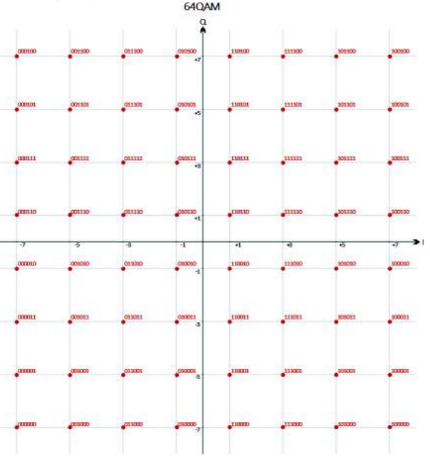

64-QAM modulation
Performs the modulation based on the 64-QAM scheme.
Contents
Sintaxis
modulated = modulate_64QAM(data)
Description
The function modulated = modulate_64QAM(data) returns a set of modulated bits based on the 64-QAM scheme. It assigns every six input bits, a complex symbol according to the 64-QAM constellation diagram mentioned in the 802.11-2012 standard.

Input Arguments
- data
Input vector, specified as an unmodulated bit vector.
Output Arguments
- modulated
Frequency modulated 64QAM symbols.
Examples
The function modular64QAM(datos) is called.
function modulated = modulate_64QAM(data)
M is defined as the number of phases used for this modulation and m as the number of bits assigned to each symbol.
M = 64;
m = 6;
modulated = zeros(1,length(data)/m);
Each bit combination is assigned according to what is specified in the standard constellation diagram. A loop is made to cover all the bits of the data vector. The data interation is done according to the standard, that is, 1 symbol every 6 bits.
for i = 1:m:length(data)
The variable re is used for the real part of the number and im is used for the imaginary part of the number.
re = 0;
im = 0*i;
The first bit (i) determines the horizontal hemisphere, the second bit (i + 1) and third bit (i + 2) correspond to the real part for the assignment according to the constellation diagram.
if data(i) == 1 re = +1; else re = -1; end if data(i+1) == 1 %1 if data(i+2) == 1 %11 * re = re*3; else %10 * re = re*1; end else %0 if data(i+2) == 1 %01 * re = re*5; else %00 * re = re*7; end end
The fourth bit (i + 3) determines the vertical hemisphere, the fifth (i + 4) and the sixth bit (i + 5) correspond to the imaginary part for the assignment according to the constellation diagram.
if data(i+3) == 1 im = +1i; else im = -1i; end if data(i+4) == 1 %1 if data(i+5) == 1 %11 * im = im*3; else %10 * im = im*1; end else %0 if data(i+5) == 1 %01 * im = im*5; else %00 * im = im*7; end end modulated( (i+m-1)/m ) = re + im;
end
end
See also